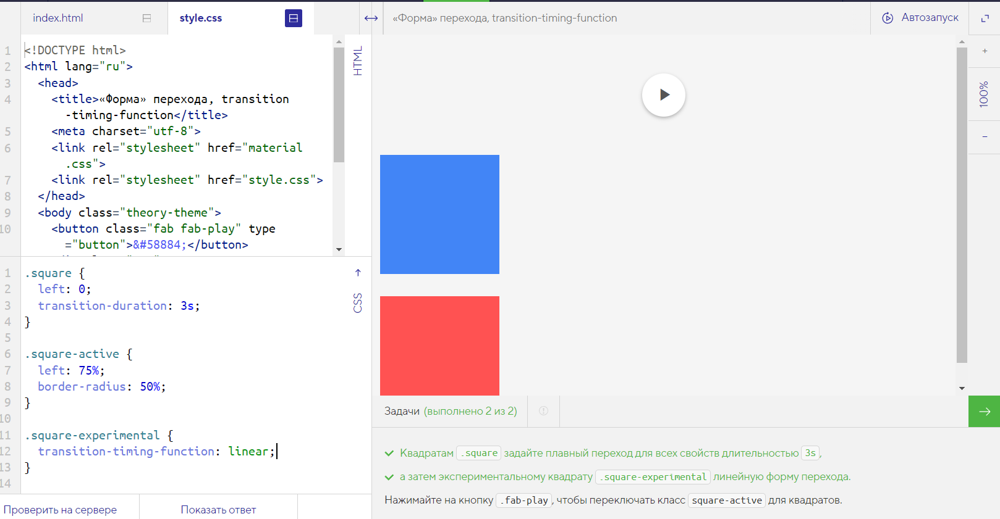

«Форма» перехода, transition-timing-function
Ещё одно свойство, влияющее на переход — transition-timing-function. Это свойство аналогично свойству animation-timing-function, которое разбирается в части по анимациям. Свойство transition-timing-function определяет с какой скоростью и ускорением будут меняться свойства во время перехода.
В предыдущих примерах переходы происходили с одинаковой динамикой. Мы меняли длительность и задержку перехода, но не «форму». Эта «форма» по умолчанию соответствует первому графику, из которого видно, что переход начинается медленно, затем ускоряется и к концу движения опять замедляется.
Так ведёт себя значение ease свойства transition-timing-function.

Чтобы сделать переход равномерным, без ускорений и замедлений, используется значение linear. «Форма» линейного перехода приведена на втором графике.
Задачи
- Квадратам .square задайте плавный переход для всех свойств длительностью 3s
- а затем экспериментальному квадрату .square-experimental линейную форму перехода.
- Нажимайте на кнопку .fab-play, чтобы переключать класс square-active для квадратов.
Было
Надо
.square {
left: 0;
transition-duration: 3s;
}
.square-active {
left: 75%;
border-radius: 50%;
}
.square-experimental {
transition-timing-function: linear;
}
Код
